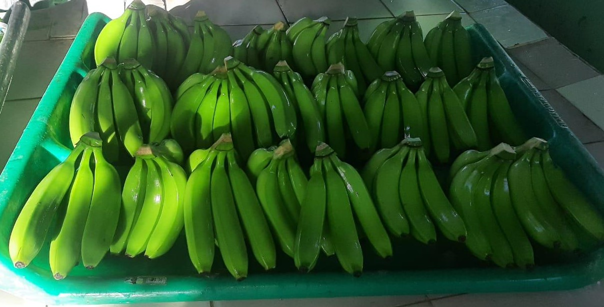
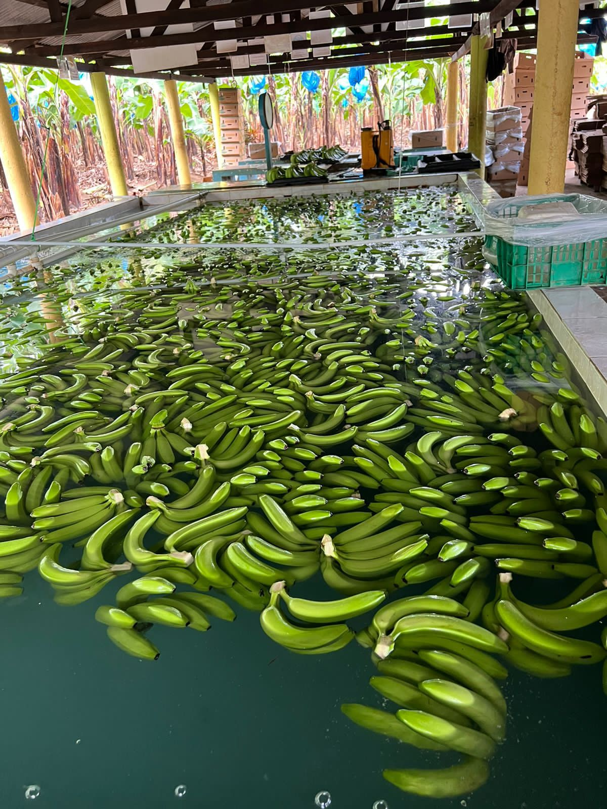

Le banane si sono affermate come uno dei frutti più popolari e consumati nel mercato globale. Il loro gusto delizioso, l'elevato contenuto nutrizionale e la versatilità rendono le banane la scelta preferita dai consumatori di tutte le età. Ricche di potassio, fibre e vitamine, le banane non sono solo uno spuntino salutare, ma anche un ingrediente essenziale in una varietà di ricette culinarie.
Le banane si distinguono per l'economicità e la disponibilità tutto l'anno, che le rendono un alimento fondamentale in molte famiglie. Inoltre, la facilità di trasporto e la lunga durata di conservazione consentono di arrivare fresche e in condizioni ottimali ovunque nel mondo.
La domanda di banane continua ad aumentare, spinta dalla crescente consapevolezza dell'importanza di un'alimentazione sana. I consumatori cercano prodotti freschi e naturali e le banane rispondono perfettamente a queste aspettative.
Le tendenze del mercato mostrano anche un crescente interesse per le banane biologiche e del commercio equo e solidale, che riflette una maggiore preoccupazione per l'ambiente e le condizioni di lavoro degli agricoltori. Questo spostamento verso pratiche più sostenibili ed etiche non va solo a vantaggio dei produttori, ma anche dei consumatori, che possono godere di banane di alta qualità coltivate in modo responsabile.
 In breve, la banana continua a essere un frutto essenziale sul mercato mondiale, apprezzato per il suo gusto, il suo valore nutrizionale e la sua convenienza. Con la continua crescita della domanda di prodotti freschi e sani, la posizione delle banane sul mercato si rafforza ulteriormente, assicurando loro un posto di primo piano nella dieta di milioni di persone.